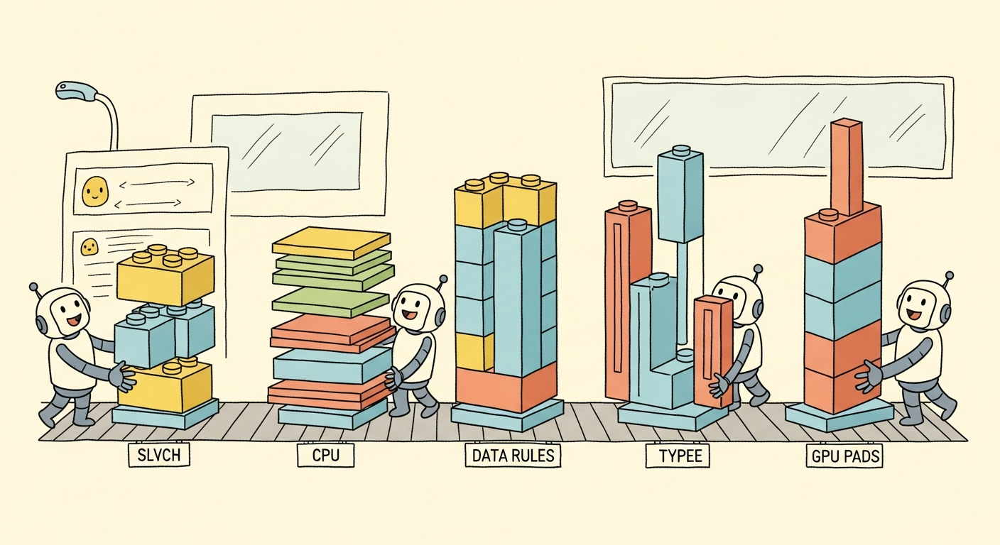

A tensor is PyTorch's universal data container: a strided, typed, contiguous block of numbers wrapped in metadata that records its shape, dtype, and device. Everything downstream, from model parameters to optimizer state to training batches, is a tensor. Mastering the tensor API is therefore the foundation on which every other section of this appendix rests.
The mental model is simple. A tensor is conceptually a multi-dimensional array, like NumPy's ndarray, but with two superpowers: it can live on accelerators (NVIDIA GPUs via CUDA, Apple Silicon via the Metal Performance Shaders backend, AMD via ROCm), and it can record the operations performed on it so that gradients can flow back automatically. This section covers the data-container side of tensors; Section E.2 covers the gradient-tracking side.
Tensor Creation
The most direct way to build a tensor is to call torch.tensor() on a Python list or scalar. The rank of the resulting tensor equals the nesting depth of the list. Scalars become 0-dimensional tensors, flat lists become 1-D vectors, lists of lists become 2-D matrices, and so on. The dtype is inferred from the literals: integers become torch.int64, floats become torch.float32.
import torch
scalar = torch.tensor(1) # 0-D, dtype=int64
vector = torch.tensor([1, 2, 3]) # 1-D, shape (3,)
matrix = torch.tensor([[1, 2], [3, 4]]) # 2-D, shape (2, 2)
cube = torch.tensor([[[1, 2], [3, 4]],
[[5, 6], [7, 8]]]) # 3-D, shape (2, 2, 2)
print(scalar.dim(), vector.dim(), matrix.dim(), cube.dim())
print(scalar.dtype, torch.tensor([1.0]).dtype)
Use torch.tensor(data) when you have Python or NumPy data and want a tensor with inferred dtype. Use torch.zeros(shape), torch.ones(shape), or torch.empty(shape) when you need a pre-allocated buffer. Use torch.zeros_like(other) and torch.ones_like(other) when the shape, dtype, and device should mirror an existing tensor; these are the safest constructors inside a model because they automatically inherit the device of the input. Use torch.arange(start, end, step), torch.linspace(start, end, n), and torch.eye(n) for ranges, evenly spaced grids, and identity matrices.
Random initializers are equally important because every model parameter starts life as random noise. torch.rand(shape) draws from the uniform distribution on [0, 1), torch.randn(shape) draws from the standard normal, and torch.randint(low, high, shape) draws uniform integers. For reproducible experiments, seed the generator with torch.manual_seed(123) before constructing any random tensor, and also seed CUDA generators with torch.cuda.manual_seed_all(123) when GPU-resident randomness matters.
Data Types
PyTorch supports the full numeric tower: torch.float64 (double precision), torch.float32 (single precision, the default for almost everything), torch.float16 (half precision, narrow but fast on modern GPUs), torch.bfloat16 (brain floating point, the workhorse of large-model training), and the integer family int8 through int64 plus the unsigned uint8 used for image pixel data. A boolean dtype, torch.bool, is used for masks.
Conversion is a one-liner: x.to(torch.float16), x.float(), x.long(), x.bool(). The .to() method is the universal mover; it accepts dtypes, devices, or both, and is the form to prefer because the same idiom works for moving to a GPU as well.
Older code uses class-style constructors like torch.FloatTensor([1, 2, 3]), torch.LongTensor([1, 2, 3]), or torch.cuda.FloatTensor([1, 2, 3]). These still work but are deprecated and create tensors on a fixed device, which makes the code less portable. Prefer the modern form: torch.tensor([1, 2, 3], dtype=torch.float32, device=device). The modern form lets a single line of code adapt to whatever hardware is available.
Devices: CPU, GPU, and MPS
Every tensor lives on exactly one device. The device is exposed via the .device attribute and printed alongside the tensor when it is on an accelerator (tensor([1., 2., 3.], device='cuda:0')). The two ways to place a tensor on a non-default device are at construction time via the device= keyword and via the .to(device) method on an existing tensor. Moving a tensor with .to() copies it; the source remains on the original device.
import torch
# Portable device selection: prefer CUDA, fall back to MPS, then CPU.
if torch.cuda.is_available():
device = torch.device("cuda")
elif torch.backends.mps.is_available():
device = torch.device("mps")
else:
device = torch.device("cpu")
a = torch.tensor([1., 2., 3.], device=device)
b = torch.tensor([4., 5., 6.]).to(device) # explicit move
c = a + b # result is on `device`
print(c, c.device)
PyTorch operators do not auto-migrate operands. Adding a CPU tensor to a GPU tensor raises RuntimeError: Expected all tensors to be on the same device, but found at least two devices, cuda:0 and cpu!. This is the most common beginner error. The fix is to keep a single device variable at the top of the script and pass it to every tensor constructor and to every .to(device) call inside the training loop. The legacy method tensor.cuda() hard-codes CUDA and is best avoided; tensor.to(device) is the portable alternative.
Shape, Reshape, and Views
The shape of a tensor is reported by .shape, which returns a torch.Size object (a tuple subclass). To change the shape without changing the data, use .reshape(new_shape) or .view(new_shape). The two are nearly identical: .view() requires the underlying storage to be contiguous and is therefore cheaper but pickier; .reshape() calls .contiguous() automatically if needed. When in doubt, use .reshape().
A -1 in any dimension means "infer from the others." This is invaluable when one dimension depends on a runtime quantity. For example, imgs.reshape(-1, 28 * 28) flattens a batch of 28-by-28 images into a 2-D matrix where the first dimension is the (unknown) batch size.
Other common shape operations are .T (matrix transpose), .transpose(dim0, dim1) (general dimension swap), .permute(*dims) (arbitrary reordering of all dimensions), .squeeze() (remove size-1 dimensions), and .unsqueeze(dim) (add a size-1 dimension at position dim). The last two are essential when adjusting tensors to match the expected rank of a layer.
Indexing and Slicing
PyTorch supports the full NumPy indexing repertoire: positional indices, negative indices, slices, ellipses, boolean masks, and integer tensor (fancy) indexing. Slicing returns a view that shares memory with the source, so mutating the view mutates the original; this is fast but a frequent source of bugs.
import torch
x = torch.arange(20).reshape(4, 5)
print(x[0]) # first row
print(x[-1]) # last row
print(x[:, 2]) # third column
print(x[1:3, 1:4]) # 2x3 sub-block
print(x[..., 0]) # first element of the last dim, any rank
# Boolean mask: returns a flat 1-D tensor.
mask = x > 10
print(x[mask])
# Fancy indexing: select rows 0, 2, 3.
print(x[torch.tensor([0, 2, 3])])
Broadcasting
Broadcasting is the rule that lets PyTorch combine tensors of different shapes without explicit replication. Two shapes are broadcast-compatible if, when their shapes are right-aligned, every dimension is either equal or one of them is 1. The size-1 dimension is then virtually replicated to match the other.
The canonical example is adding a bias vector to a batch of activations: a tensor of shape $(B, D)$ plus a tensor of shape $(D,)$ works because the bias is implicitly broadcast across the batch axis. Outer products fall out naturally: x.reshape(N, 1) + y.reshape(1, M) produces an $N \times M$ matrix of pairwise sums. Broadcasting is what makes linear-algebra notation translate directly to PyTorch code.
Broadcasting does not materialize the expanded tensor in memory. It just tells the underlying kernel to stride zero across the missing axes. This is why adding a 1-D bias to a 4-D activation tensor is essentially free; no replication happens. The same is true of tensor.expand(new_shape), which produces a view with stride-zero replication. The closely related tensor.repeat(*sizes), by contrast, actually allocates the expanded storage and is slow. When the choice exists, prefer .expand().
Broadcasting feels like magic until you accidentally add a vector of shape (8,) to a matrix of shape (8, 1) and get an (8, 8) matrix nobody asked for. The framework will happily oblige with no warning; the model will train, the loss will hover, and a polite suspicion will grow that something is off. Always print the shape before the next line of code; the rule pays for itself the first time it catches you.
Einsum: One Notation to Rule Them All
torch.einsum(equation, *tensors) expresses arbitrary tensor contractions using Einstein summation notation. The equation is a string with input subscripts (separated by commas) and an output subscript (after the arrow). Repeated indices are summed over; indices that appear in the output are preserved.
import torch
A = torch.randn(3, 4)
B = torch.randn(4, 5)
C = torch.einsum("ik,kj->ij", A, B) # matrix product (3x5)
x = torch.randn(8, 3)
y = torch.randn(8, 3)
dot = torch.einsum("bd,bd->b", x, y) # batched dot product (8,)
# Attention scores in one line: Q (B, H, T, D), K (B, H, T, D).
Q = torch.randn(2, 4, 16, 64)
K = torch.randn(2, 4, 16, 64)
scores = torch.einsum("bhqd,bhkd->bhqk", Q, K)
print(C.shape, dot.shape, scores.shape)
einsum. The same notation expresses matrix multiplication, batched dot products, and attention scoring without intermediate reshapes.When the rearrangement is a permute-then-reshape rather than a contraction, reach for einops.rearrange: it names every axis, replaces chains of view/transpose/reshape with a single labeled string, and fails loudly when shapes do not match the pattern. The same library exposes einops.repeat and einops.reduce for the broadcasting and reduction analogues.
from einops import rearrange, reduce
# Reshape (B, T, H*D) into (B, H, T, D) for multi-head attention.
qkv = rearrange(qkv, "b t (h d) -> b h t d", h=num_heads)
# Mean-pool over time, keeping the (B, D) layout.
pooled = reduce(features, "b t d -> b d", "mean")
Einsum's value is that the equation reads like the math. The attention-score line above corresponds directly to the formula $S_{b,h,q,k} = \sum_d Q_{b,h,q,d} K_{b,h,k,d}$. There is no need to remember whether to transpose, permute, or matmul; the index pattern alone determines the computation. Modern PyTorch compiles einsum to the same kernels as the explicit reshape-and-matmul version, so there is no performance penalty.
In-Place vs Out-of-Place Operations
Every PyTorch operation has two flavors. The out-of-place version (x + y, x.add(y), torch.relu(x)) allocates a new tensor for the result. The in-place version, marked with a trailing underscore (x.add_(y), x.relu_(), x.copy_(y)), mutates x directly. In-place ops save memory but are dangerous in the presence of autograd: if a tensor that participates in the computation graph is mutated, the backward pass may compute the wrong gradient or raise RuntimeError: one of the variables needed for gradient computation has been modified by an inplace operation.
In-place operations are safe in three situations. First, on tensors that do not require gradients (most data tensors). Second, in optimizer steps that update parameters (param.add_(-lr * param.grad)) because optimizer code lives outside the autograd graph. Third, on intermediate buffers explicitly detached from the graph. Outside these cases, prefer the out-of-place form; the memory savings rarely justify the debugging cost.
NumPy Interop
PyTorch and NumPy share memory whenever they can. torch.from_numpy(arr) wraps a NumPy array as a tensor without copying. tensor.numpy() exposes the underlying storage as a NumPy array, also without copying, provided the tensor is on the CPU and does not require gradients. For GPU tensors, the workflow is tensor.detach().cpu().numpy(): detach from the graph, move to CPU, then convert.
Tensors are the universal currency of PyTorch. The four attributes that fully describe a tensor are its shape, dtype, device, and whether it requires gradients. Most beginner errors trace back to a mismatch in one of these four: a 4-D tensor where a 2-D was expected, a float64 where a float32 was expected, a CPU tensor where a CUDA tensor was expected, or a graph-attached tensor where a detached one was expected. Reading the shape, dtype, and device of every tensor that crosses a function boundary will eliminate the majority of bugs before they happen.
Objective. Build fluency with the broadcasting rules and the shape, dtype, device triple.
Task. Given A = torch.arange(12).reshape(3, 4) and b = torch.tensor([10, 20, 30, 40]), predict the shape of A + b, A + b.unsqueeze(0), A + b.unsqueeze(1), and A * b[:, None] on paper first. Then run the snippet and confirm. For each case, print tensor.shape, tensor.dtype, and tensor.device.
Stretch. Construct a 5-D tensor of shape (2, 1, 3, 1, 4) and a 2-D tensor of shape (3, 4) and find the broadcast result. Write the alignment in a one-line comment.
Expected outcome. The third case fails because (3, 4) and (4, 1) are not broadcast-compatible. The error message is your friend; read it and recover.
Objective. Internalize einsum notation by translating three common operations.
Task. Rewrite each of the following NumPy or PyTorch one-liners as a single torch.einsum call, then verify equivalence with torch.allclose:
- Batched matrix multiplication:
torch.bmm(X, Y)whereXis(B, M, K)andYis(B, K, N). - Outer product per batch:
(u[:, :, None] * v[:, None, :])foru, vof shape(B, D). - Attention-style score:
(Q @ K.transpose(-2, -1))forQ, Kof shape(B, H, T, D), producing(B, H, T, T).
Hint. Read indices as named axes. "bmk,bkn->bmn" reads as "for each batch b, sum over k".